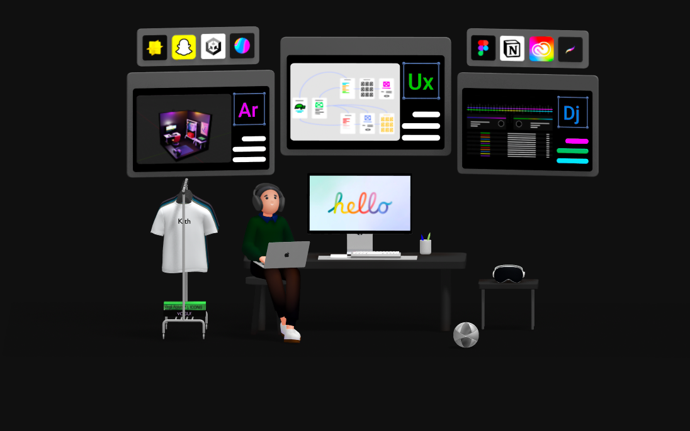

Akhilesh Narotra
|
✅ Available for full-time roles starting immediately

Summary
Results-driven QA analyst and technical support professional with hands-on experience in software testing, data operations, and user support. Skilled in manual and automated testing (Selenium WebDriver), defect tracking (JIRA/Agile), regression testing, and data quality assurance (SQL, Power BI). Proficient in Python, AWS, and Linux. Detail-oriented and solution-focused, bridging technical challenges with user needs. Seeking QA Analyst, Technical Support Engineer, or Data Quality Analyst roles.
Skills
QA & Testing
Technical Support
Data & Analytics
Programming
AI & Data Science
Experience
PRESENT
Junior Data Operations Analyst
Weldforce Corporation, Mississauga Remote
- Managed the full data lifecycle for sales leads, processing and qualifying 50+ weekly inbound records to ensure accurate data entry and timely hand-off to the sales team.
- Spearheaded data quality initiatives by auditing and cleansing the lead database using QA methodologies (deduplication, validation rules), boosting overall data accuracy by 20%.
- Developed standardized operating procedures (checklists) for lead tracking and data entry, which reduced processing errors by 15% and ensured team-wide consistency.
- Generated weekly data quality reports using Excel and CRM analytics, providing actionable insights to identify trends and guide process improvements.
PRESENT
Sales Associate (Customer Support Focus)
Winners (TJX Canada), Ottawa On-site
- Provided first-level customer support, resolving 50+ daily inquiries by analyzing and replicating transactional issues and escalating systemic inconsistencies to management.
- Delivered high-accuracy quality control, consistently maintaining a 98% accuracy rate in cash handling and inventory reconciliation by applying checklist-based verification methods.
- Acted as a key team collaborator, consistently meeting daily sales targets while supporting store flow and upholding merchandising standards and operational consistency.
APR 2025
Food Cupboard Assistant
Algonquin Students' Association, Ottawa On-site
- Led and coordinated a team of 5+ volunteers for weekly food distribution, streamlining workflows to reduce student wait times by 20% for a service supporting 270+ students.
- Developed and implemented an inventory tracking system using Excel, Calendly, and Link2feed, which reduced food waste by 15% and optimized resource allocation.
- Enforced strict food safety and handling protocols across all operations, consistently achieving 100% compliance with health standards.
Project Log
Five closed tickets spanning QA, UX design, and renewable energy systems. Starred tickets (★) are the top pick from each track — QA, Energy, and UX.
Software Testing — Web Banking Application
Ensuring functionality and stability of a multi-feature banking application
- Test automation: Automated 50+ test cases (login, transactions) with Selenium WebDriver, cutting regression testing time by 30%.
- Defect management: Logged 40+ defects in JIRA and collaborated with developers to resolve critical bugs before release.
- Documentation: Delivered comprehensive test plans, bug reports, and coverage metrics after each regression cycle.
The challenge
The banking application had no formalized regression suite, so every release risked shipping broken login or transaction flows undetected.
My approach
Built a manual and automated testing framework using Selenium WebDriver, covering the highest-risk transaction paths, and logged every defect in JIRA with reproducible steps for engineering.
The result
Cut regression testing time by 30% and gave the team a repeatable safety net that catches critical bugs before release.
UX Redesign — Online Student Portal
Revamping a college portal for accessibility and ease of use
- Design and compliance: Built wireframes and high-fidelity mockups to a WCAG-compliant standard, improving accessibility for all users.
- Mobile optimization: Enhanced mobile responsiveness and cut navigation friction by 30%.
- User validation: Planned and ran usability testing sessions to validate the redesign before handoff.
The challenge
Students frequently abandoned key portal tasks like registration and checking grades, due to a poor mobile layout and inaccessible design patterns.
My approach
Rebuilt the information architecture around WCAG-compliant wireframes and high-fidelity mockups, then validated every major flow with real users before handoff.
The result
Mobile navigation friction dropped by 30%, and the redesign shipped with accessibility built in from the start rather than patched on afterward.
Mobile Prototype — Meditation & Wellness App
Designing a calming mobile app for meditation and habit tracking
- UI design: Applied color psychology and minimalist UI principles to create a calming, user-friendly interface.
- Feature development: Designed guided meditation modules and integrated in-app feedback loops.
- Prototype validation: Validated the prototype through A/B usability sessions to ensure an intuitive user experience.
The challenge
Most meditation apps overload users with options up front, which works against the calm experience they're supposed to deliver.
My approach
Applied color psychology and minimalist UI principles to strip the interface down to what mattered, then stress-tested the flow through A/B usability sessions.
The result
A prototype that felt intuitive on first use, validated directly by test participants rather than assumptions.
Solar & Battery Storage System — Isla Mocha, Chile
50 kW solar PV system with lithium-ion storage, replacing diesel generators
- System design: Ran solar resource assessments, load forecasting, and stakeholder consultations to design a 50 kW PV + battery system.
- Financial modeling: Modeled a 7.2-year payback period, electrifying 30 houses with 2-day battery autonomy.
- Impact: Aligned the design with Chile's renewable energy targets, significantly cutting emissions and operating costs.
The challenge
Isla Mocha's 30 households relied on costly, high-emission diesel generators with no renewable alternative in place.
My approach
Ran solar resource assessments and load forecasting, consulted with local stakeholders, and designed a 50 kW PV system paired with lithium-ion storage sized for 2-day autonomy.
The result
A 7.2-year payback system that electrifies all 30 homes while cutting emissions and aligning with Chile's renewable energy targets.
Energy Efficiency Audit — Viscount Alexander Public School
Retrofit plan to optimize energy use across a 2,258 m² school building
- Audit and analysis: Identified HVAC and lighting inefficiencies, proposing a retrofit plan for 10.9% annual savings (~$18K/year).
- Financial and GHG modeling: Modeled a 4.4-year payback, 54.3% IRR, and an 8.7% GHG reduction.
- Recommendations: Recommended 36 occupancy sensors to further cut usage and presented findings to the school board.
The challenge
Viscount Alexander Public School's aging HVAC and lighting systems were driving avoidable energy costs across 2,258 m² of space.
My approach
Audited the building systems, modeled a retrofit plan with financial and GHG impact projections, and proposed 36 occupancy sensors to extend savings further.
The result
A retrofit plan projecting 10.9% annual savings (~$18K/year), a 4.4-year payback, and an 8.7% cut in emissions — presented directly to the school board.
Education
Energy Management, Postgraduate Certificate
Algonquin College
Software QA & Test Engineering
Conestoga College
Bachelor of Computer Application
Guru Nanak Dev University
Certifications: AWS Solutions Architect · Android Basics (Kotlin) · Deep Learning (Coursera)
Contact
📩 Interested in collaborating? Reach out by email or connect on LinkedIn below.